Cell cycle and cell death
Every day, tens of billions of your cells kill themselves, on purpose and without fuss. Today: apoptosis, the cell’s built-in program for a clean death, and how the decision to start it is made.
After this lecture you can:
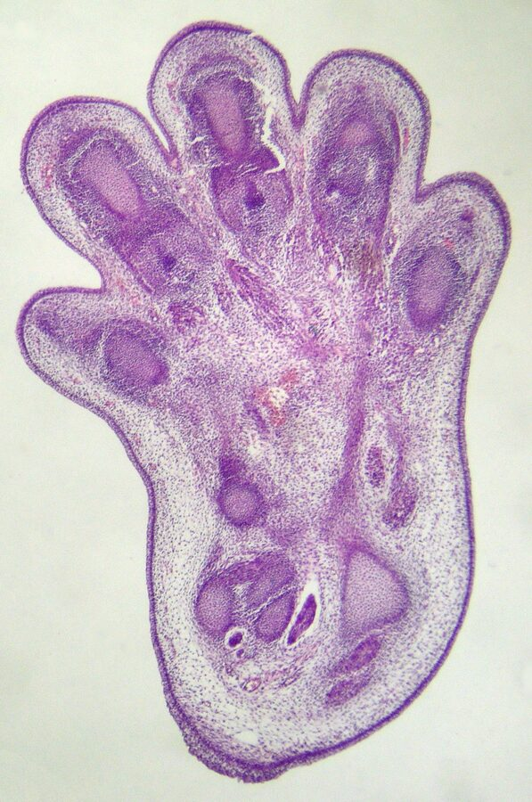
Foot of a mouse embryo (day 15.5), stained section. The tissue between the digits is being removed.
How does a cell decide to die, and how does it do it so cleanly?
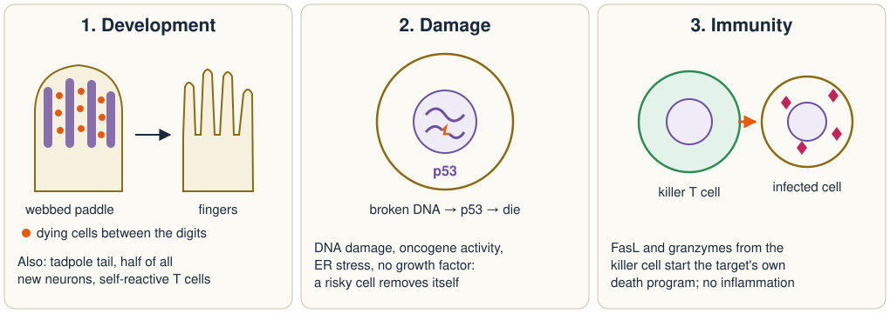
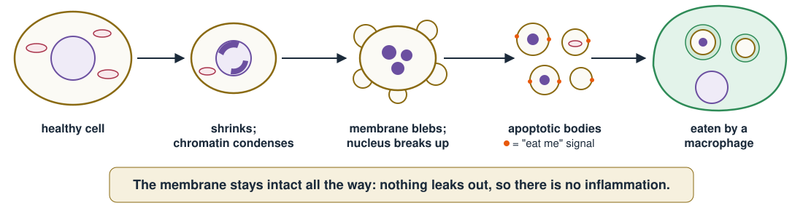
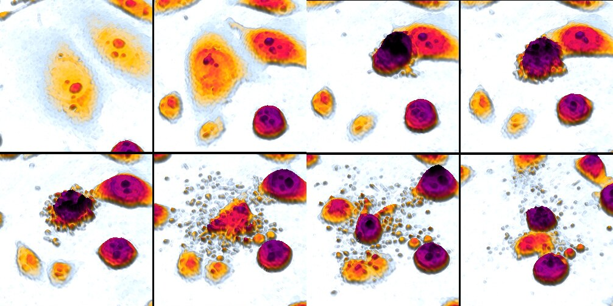
Time-lapse frames of a prostate cancer cell dying after an anticancer drug (holographic microscopy; colour = cell thickness). Read left to right, top row first.
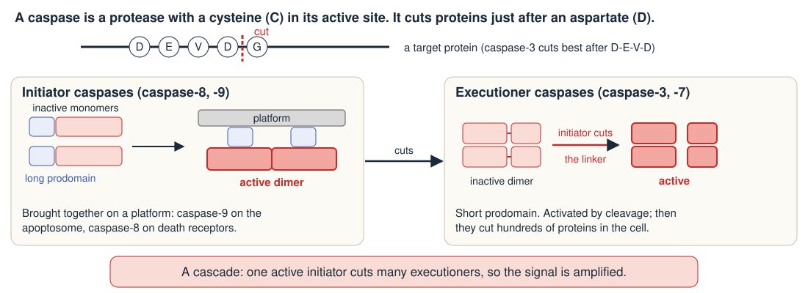
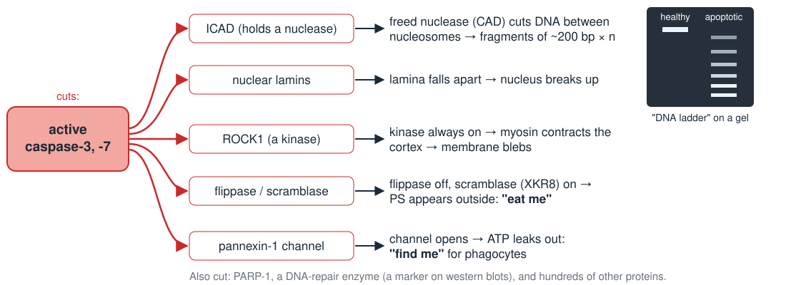
Each shape change on the previous slide is caused by one cut in a specific protein.
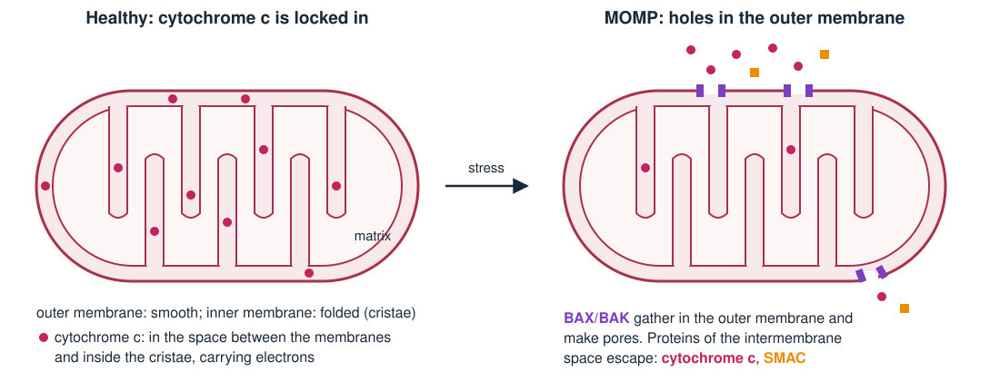
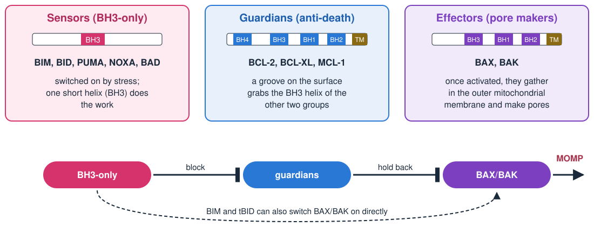
All three groups share BH (BCL-2 homology) regions. The BH3 helix of one protein fits into the groove of a guardian, like a key into a lock.
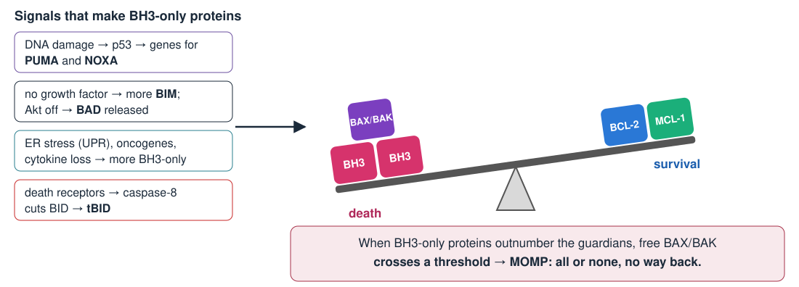
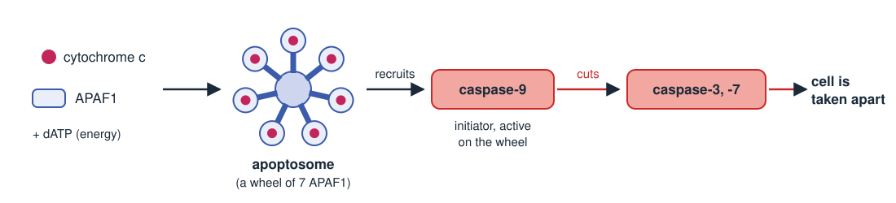
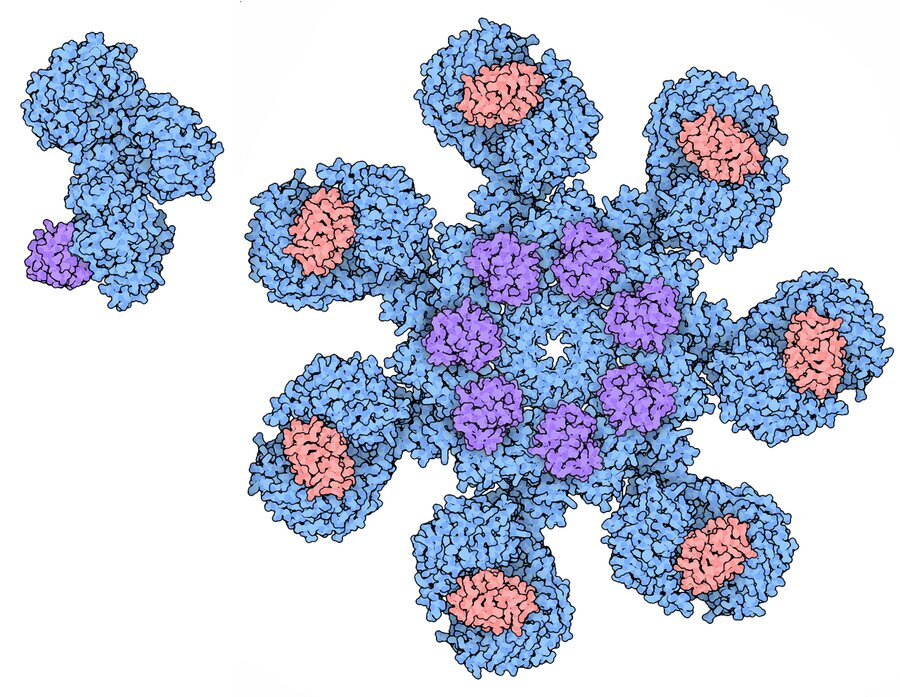
Left: one APAF1, folded shut. Right: the apoptosome, with cytochrome c (pink-red) on each arm and the CARD domains (purple) in the centre, where caspase-9 binds.
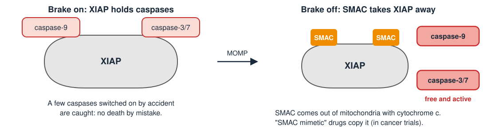
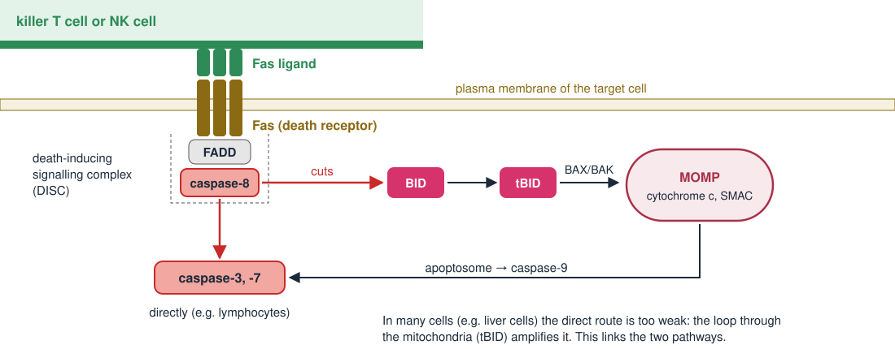
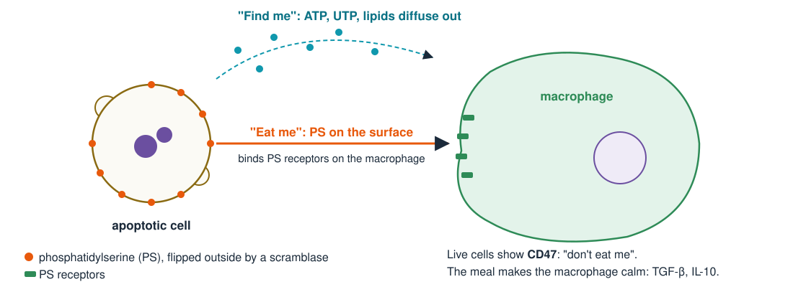
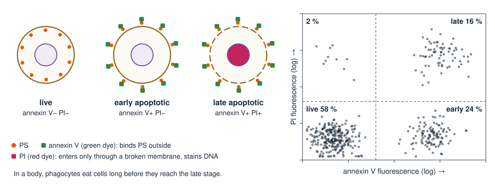
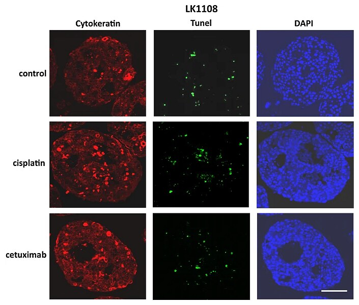
TUNEL (green) in 3D balls of cancer cells, 7 days after two anticancer drugs. Red: cytokeratin; blue: all nuclei (DAPI). Scale bar 100 µm.
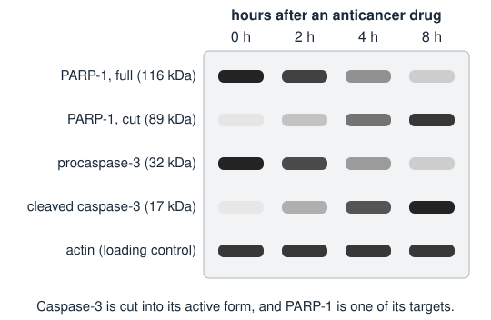
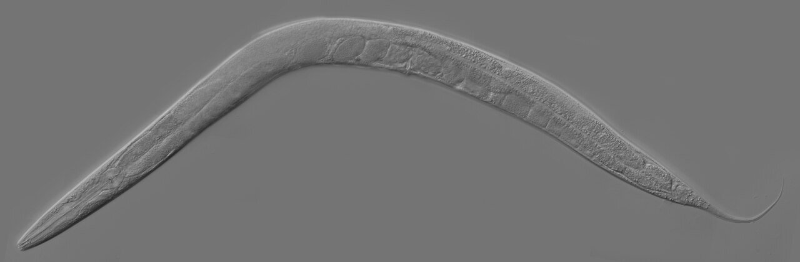
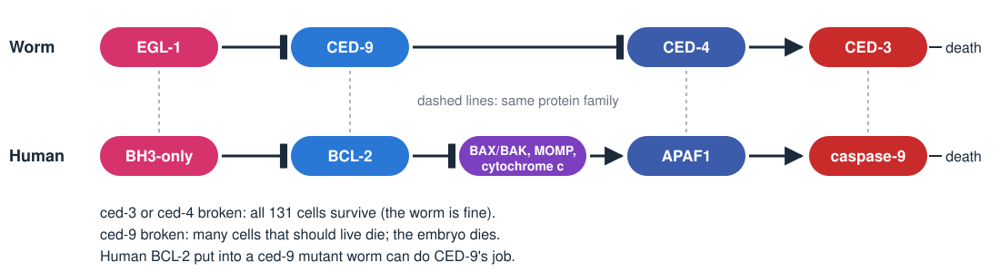
In the worm C. elegans, exactly 131 of 1090 cells die during development. Mutant screens found the death genes (Nobel Prize 2002).
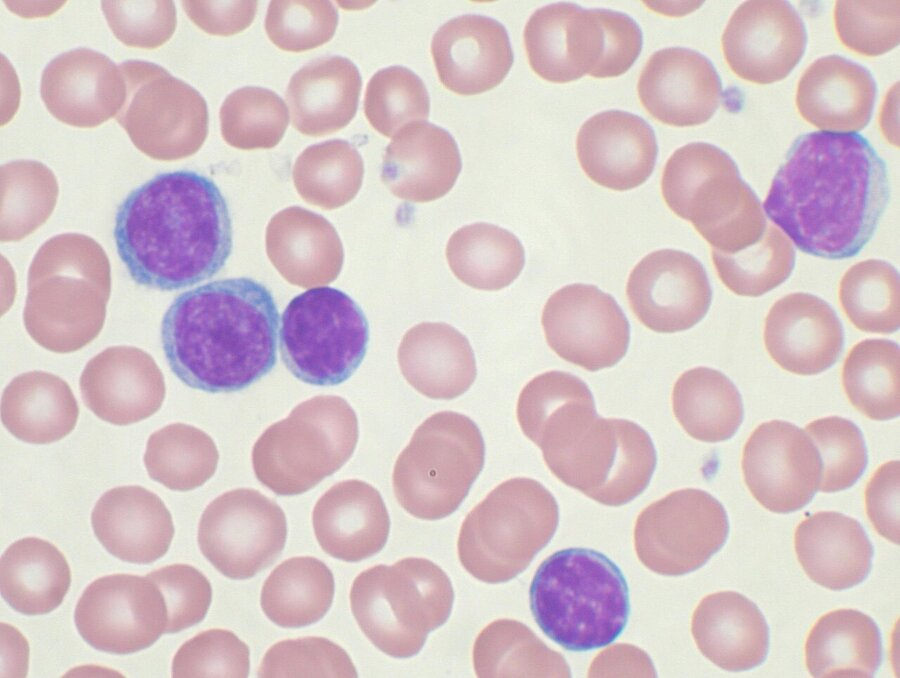
Blood smear in chronic lymphocytic leukaemia (CLL): many small lymphocytes with dark nuclei.
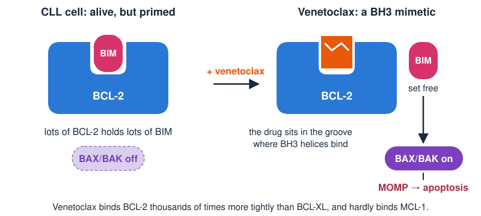
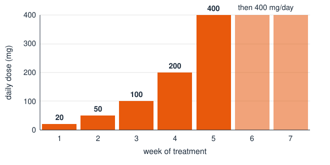
The dose is raised step by step over 5 weeks.
Read more (optional): Alberts et al., Molecular Biology of the Cell, 7th ed., ch. 18.